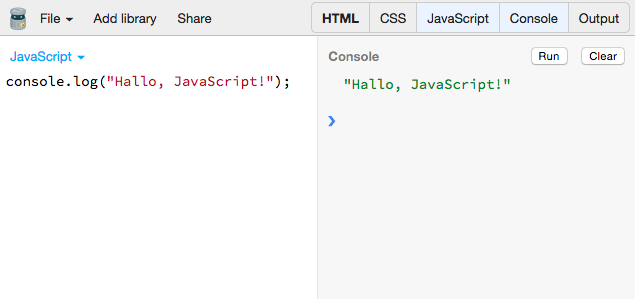

Workshop: JavaScript für Java- und C#-Entwickler
Oliver Zeigermann | http://zeigermann.eu
Inhalte
- Basiswissen
- Funktionen
- Objekte und Klassen
- Module
- Optional: Unit-Tests
Optional: jQuery- Optional: Die Zukunft von JavaScript
Hello World
Hello World #1
<!DOCTYPE html>
<html>
<head>
<title>Hello World!</title>
<script>
alert("Hello World");
</script>
</head>
<body>
</body>
</html>
Hello World #2
<!DOCTYPE html>
<html>
<head>
<title>Hello World!</title>
</head>
<body>
<div id="log"></div>
<script>
var element = document.getElementById("log");
element.innerHTML = "<h1>Hello World</h1>";
</script>
</body>
</html>
Hello World #3
node -e "console.log('Hello World');"
Hello World #4

Hello World #5
JS Bin Öffnen
Object
var map = {
feld1: 'Huhu',
zweites$Feld: "Auch sowas geht!"
};
console.log(typeof map === "object"); // true
console.log(map.feld1); // Huhu
console.log(map["zweites$Feld"]); // Auch sowas geht!
map.hund = "Ganz neu geht auch";
Typen
var string = "String";
typeof string === "string";
var int = 1;
typeof int === "number";
var float = 1.0;
typeof float === "number";
var bool = true;
typeof bool === "boolean";
var func = function() {};
typeof func === "function";
typeof michGibtEsNicht === "undefined";Array
var array = ["a", "b", "c"];
var el = array[2];
array[1] = 20;
typeof array === "object";
// fügt die 4 am Ende hinzu
array.push(4);
Kontrollstrukturen
for
for (var i=0; i < array.length; i++) {
console.log(i + ": " + array[i]);
}
// Durch alle Feld-Namen iterieren
// Geht für Map / Object und für Array!
for (var i in map) {
console.log(i + ": " + map[i]);
}
Kontrollstrukturen ansonsten wie in Java / C#
- if / else
- while / do
- switch
- break / continue
- Referenz
Funktionen
function f2() {
console.log("Called!");
}
var result2 = f2();
result2 === undefined;
var f1 = function(p1, p2) {
return p1 + p2;
};
var result1 = f1(1,2);
result1 === 3;
Optionale Parameter
function f1(p1) {
if (typeof p1 === 'undefined') {
return null;
} else {
return p1;
}
}
var result1 = f1(1);
console.log(result1 === 1);
var result2 = f1();
console.log(result2 === null);Varargs
function summe() {
var sum = 0;
for (var a in arguments) {
sum += arguments[a];
}
return sum;
}
var result5 = summe(1,2,3);
console.log(result5 === 6);Scopes
So nicht!
{
var huch = "Ich bin noch da";
}
console.log(huch); // Ich bin noch da
So!
(function () {
var achso = "Ich bin weg";
}());
console.log(achso); // ReferenceError
Übung: Basiswissen
- Erzeuge ein Array mit Personen-Objekten mit mindestens den Eigenschaften
- Name
- Alter
- Geschlecht
- Gib alle Personen nacheinander aus
- Erstelle eine Funktion, die eine Person auf der Console ausgibt
Objekte, die Zweite
- Objekte können auch Funktionen als Properties haben
- Diese funktionieren dann wie Methoden, d.h.
thisist an das Objekt gebunden über das sie aufgerufen werden
var obj = {
field: 10,
log: function() {
console.log(this.field);
}
};
obj.log(); // 10
Call / Apply
- call und apply sind Methoden auf Funktionen
- Erlauben das freie Binden an einen anderen Kontext
var field = "Reingelegt";
obj.log.call(this);
// => ???
Klassen mit JavaScript
- Klassen und Konstruktoren sind Mechanismen, um mehrere, strukturell gleiche oder ähnliche Objekte zu erzeugen
- Auch in JavaScript können eigene Klassen definiert werden
- Einfachvererbung ist ebenso möglich
- Der Mechanismus ist nicht direkt in die Sprache eingebaut
- Stattdessen benutzen wir Best-Practice-Patterns
- Grundlage ist die prototypische Vererbung
Prototypen
- Jedes Objekt hat zusätzlich eine Referenz auf seinen Prototyp
Object.getPrototypeOf()in neueren Browsern
Objecthat keinen Prototypen, ist aber Prototyp aller anderen Objekte- Lesende Property-Zugriffe können transitiv an Prototypen delegiert werden
- Dies heißt prototypische Vererbung
Setzen des Prototypen aka das Typen-System
Der Prototyp kann nicht direkt, aber durch Aufruf von new gesetzt werden
/** @constructor */
function Person(name) {
this.name = name;
}// Methode
Person.prototype.getName = function() {
return this.name;
};
var olli = new Person('Olli');
olli.getName() === 'Olli';
Ablauf eines Konstruktoraufrufs mit new
- ein leeres, neues Objekt wird erzeugt
- die Konstruktor-Funktion hat ein Property
prototype, dies wird als Prototyp des neuen Objekts verwendet thiswird an dieses neue Objekte gebunden, d.h. man kann darauf überthiszugreifen- die Konstruktor-Funktion wird aufgerufen (mit
thisgebunden) - das neue Objekt wird implizit zurückgegeben (wenn die Funktion kein explizites
returnhat)
"Typsystem"
Ein Objekt ist instanceof aller seiner Prototypen
var olli = new Person('Olli');
Object.getPrototypeOf(olli) === Person.prototype;
olli instanceof Object;
olli instanceof Person;
Warnung
Douglas Crockford findet Klassen und this doof
Douglas Crockford hatte vor einigen Jahren großen Einfluss auf die Entwicklung von JavaScript
Douglas Crockford schrieb das Buch "JavaScript the good parts"
Die Zukunft von JavaScript gibt ihm allerdings nicht Recht (später mehr)
Übung: Klassen
- Schreibe eine Klasse für Person
- Lasse im Konstruktor die drei bekannten Parameter für
name,alterundgeschlechtzu - Mache aus allen Funktionen, die auf Personen arbeiten, Methoden
- Lasse im Konstruktor die drei bekannten Parameter für
- Erzeuge ein Objekt vom Typ Person und rufe Methoden darauf auf
Vererbung
- Klassen-Hierarchien und Instanzen nutzen beide Prototypische Vererbung
- Klassen-Hierarchien werden einmal aufgebaut und als Prototypen der Instanzen verwendet
- Klassen-Hierarchien werden ebenso über Prototypen erstellt
- Object.create erzeugt ein neues Object mit einem anderen Objekt als Prototypen
- Aufruf von Super-Konstruktoren und Super-Methoden über call / apply
Vererbung #1
function Person(name, gender) {
this.name = name;
this.gender = gender;
}
Person.prototype.getName = function() {
return this.name;
};
function Male(name) {
Person.call(this, name, "Male"); // super call
}
Male.prototype = Object.create(Person.prototype);Vererbung #2
Male.prototype.getName = function() {
// super call
return "Mr " + Person.prototype.getName.call(this);
};
var martina = new Person('Martina');
var olli = new Male('Olli');
olli.getName() === 'Mr Olli';
olli.gender === 'Male';
olli instanceof Male;
olli instanceof Person;
olli instanceof Object;Underscore
- _.extend eine von vielen Hilfsfunktionen der Bibliothek Underscore
- http://underscorejs.org/
- Versucht Unzulänglichkeiten der Sprache als Bibliothek auszugleichen
- Ein Klassiker unter den JavaScript-Bibliotheken
- wird typischerweise als _ importiert (daher der Name)
- https://lodash.com/ ist die moderne Variante
- Neues JavaScript-Versionen enthalten bereits eine ganze Reihe der Funktionen dieser Bibliotheken
Beispiel
function Programmer(name, language) {
Person.call(this, name);
this.language = language;
}
_.extend(Programmer.prototype, Person.prototype);
// instead of
// Programmer.prototype = Object.create(Person.prototype);
Programmer.prototype.code = function() {
return this.getName() + " codes in " + this.language;
};
var programmer = new Programmer('Erna', 'JavaScript');
console.log(programmer.getName()); // Erna
console.log(programmer.code()); // Erna codes in JavaScript
console.log(programmer instanceof Programmer); // true
// true for Object.create, false for _.extend
console.log(programmer instanceof Person);Vererbungshierarchien - revisited
- Das verwirrendste Thema in JavaScript
- Viele Bibliotheken nehmen sich dieses Themas an
- Alternative zu Klassen-Hierarchien sind Mixins
- Bei Mixins werden alle Properties eines Prototypen in einen anderen hineinkopiert
Mixins
function mixin() {
child = {};
for (var arg = 0; arg < arguments.length; arg ++) {
for (var prop in arguments[arg]) {
if (arguments[arg].hasOwnProperty(prop)) {
child[prop] = arguments[arg][prop];
}
}
}
return child;
}
Mixins
var wolpertinger = mixin(
{fly : function() {console.log("fly");}},
{swim: function() {console.log("swim");}},
{bark: function() {console.log("bark");}}
)
wolpertinger.bark(); // bark
jQuery.extend
// http://api.jquery.com/jQuery.extend/
// Merge the contents of two or more objects together
// into the first object
var wolpertinger = $.extend({}, duck, dog);
Übung: Vererbung
- Schreibe die Klasse Customer
- Customer soll von Person erben
- Berechne im Konstruktor aus den Parametern zumindest ein zusätzliches Feld, das den vermuteten bevorzugten Kaufgegenstand angibt
- Rufe aus dem Customer-Konstruktor den Person-Konstruktor auf
- Überschreibe die Methode
getName - Füge die Methode
shophinzu, die den bevorzugten Gegenstand ausgibt
- Erzeuge mindestens ein Objekt vom Typ Customer und rufe Methoden darauf auf
Module
Module in JavaScript werden über Closures realisiert
Closure in einem Satz
Eine innere Funktion hat immer Zugriff auf alle Variablen und Parameter ihrer äußeren Funktion, auch wenn diese äußere Funktion bereits beendet ist.
Frei nach Douglas Crockford
Beispiel Closure
function outer() {
var used = "Olli";
var unused = "weg";
return (function() {
return "Text: " + used;
});
}
var inner = outer();
console.log(inner());Closure Definition
Eine Closure ist eine spezielle Art von Objekt, welche zwei Dinge kombiniert
- Eine Funktion
- die Umgebung in welcher diese Funktion erzeugt wurde - diese Umgebung besteht aus allen lokalen Variablen und Parametern, die sichtbar waren als die Closure erzeugt wurde
Revealing Module Pattern
var humanresources = (function () {
function InternalStuff() {
}
function Person(name) {
this.name = name;
// uses internal stuff
}
return {
Person: Person
};
})();
Sichtbarkeit bei Revealing Module Pattern
var olli = new humanresources.Person('Olli');
olli.name === 'Olli';
// TypeError: undefined is not a function
new humanresources.InternalStuff();Es gibt zwei grundsätzlich unterschiedliche Modul-Systeme als Defacto-Standard
- AMD
- Module werden nicht blockierend und potentiell asynchron geladen
- Module werden über bower oder manuell installiert
- Verwendung auf Client-Seite
- Default-Implementierung: RequireJS
- CommonJS
- Module werden blockierend und synchron geladen
- Module werden über npm installiert
- Verwendung auf Server-Seite
- Beide Modul-Systeme können über r.js / Browserify auch auf Server / Client benutzt werden. Webpack kann sowohl CommonJs als auch AMD Module gleichzeitig verwenden.
CommonJS Module (Node)
Definition
// in der Datei "eater.js"
var eatThis = function (name) {
console.log(name);
};
exports.eatThis = eatThis;Einbinden
var eaterModule = require("eater");
eaterModule.eatThis(name);
AMD Modul mit requireJS
Definition
// Ein Modul pro Datei:
// js/modules/accounting.js
define(function () {
return {
getIdNumberForName: function(name) {
// ...
}
};
});
Einbinden
require(['js/modules/accounting'], function (Accounting) {
var name = // ...
var id = Accounting.getIdNumberForName(name);
// ...
});
Übung: Module
- Schreibe ein Modul, in das du die vorhandenen Typendefinitionen verschiebst. Dieses Modul soll
- nach außen nur die
Customer-Klasse exportieren
- nach außen nur die
- Schreibe den aufrufenden Code so um, dass er mit den neuen Modulen arbeitet
- Benutze das Revealing Module Pattern
Testen mit Jasmine
Grundlagen Jasmine
- weit verbreitetes JavaScript Unit-Testframework
- Stil BDD orientiert, etwas anders als JUnit
- Ausführung im Browser
describe: eine komplette Test-Suiteit: ein einzelner Testfallexpect: erwartetes Ergebnis ausdrückenbeforeEach / afterEach: Vorbereitung / Aufräumarbeiten- Hauptseite Jasmine
Test-Suite
describe("Calculator", function () {
var data;
beforeEach(function () {
// calculateMortgage(price, down, interest, term)
data = calculateMortgage(200000, 10, 7.5, 30);
});
afterEach(function() {
});
it("principle", function () {
expect(data.principle).toEqual(199990.00);
});
it("invalid", function () {
expect(function () {
calculateMortgage(1, 10, 7.5, 30);
}).toThrowError("You do not need any money");
});
});Beispiel-Test-Lauf
Tests laufen lassenÜbung: Teste deine eigenen Klassen
- Nutze dafür dieses JsBin-Projekt als Grundlage http://jsbin.com/jijuri/2/edit?js,output
- Clone das Projekt und verschiebe deine Klassen in den JavaScript-Bereich
- Schreibe mit Jasmine sinnvolle Spezifikationen für deine Klassen
- Achtung: Aus technischen Gründen, läuft Jasmine hier in der älteren Version 1.3.1
Die Zukunft von JavaScript
- JavaScript gewinnt immer mehr an Bedeutung
- Wer für den Browser entwickelt, kommt an JavaScript nicht vorbei
- JavaScript hat allerdings viele Klippen
- keine deklarierte Typen
- Klassen und Vererbung umständlich
- keine lexikalischen Scopes
- Bindung von this kann verwirrend sein
- Kein Einheitliches Modul-Konzept
- Die nächste Version von JavaScript wird diese Klippen entfernen (außer Typen)
- Es gibt Ansätze für deklarierte Typen in JavaScript
JavaScript vs ECMAScript
- ECMAScript ist der Standard
- JavaScript ist ein eingetragenes Warenzeichen von Oracle Corporation
- ECMAScript wird oft als ES abgekürzt
- Ab IE9 sind wir bei ES5 (2009)
- ES2015 ist der offizielle, neue Name für ES6
- Spec für ES6 (beinahe) final
- An der Spec für ES7 wird bereits gearbeitet
- Vieles bereits heute nutzbar
Ausblick auf ES2015
keine statischen Typen
- Module
- Klassen
- let, const
- Fat arrow => für besseres Binding von this
- vararg, optional
- Collection Types (Map, Set, WeakMap, WeakSet)
Gesprengte Ketten #1: Lexikalisches Scoping
(function(){
'use strict';
{
let a = 10;
// or
const b = 10;
a = 20;
// when a is const:
// => TypeError: Assignment to constant variable.
}
console.log(a); // => ReferenceError: a is not defined
})();
Gesprengte Ketten #2: Klassen
(function(){
'use strict';
class Person {
constructor(name) {
this.name = name;
}
getName() {
return this.name;
}
}
class Programmer extends Person {
constructor(name, language) {
super(name);
this.language = language;
}
code() {
return this.getName() + " codes in " + this.language;
}
}
const programmer = new Programmer('Erna', 'JavaScript');
console.log(programmer.code());
console.log(programmer instanceof Programmer); // true
console.log(programmer instanceof Person); // true
})();Gesprengte Ketten #3: Fat Arrow
var result = values.sort(function(a, b) {
return a - b;
});
(function(){
'use strict';
let arr = ['a', 'e', 'i', 'o', 'u'];
arr.sort( (a, b)=> a < b? 1: -1 );
console.log(arr);
})();
Weitere gesprengte Klippen
- Module (mit import)
- Unicode support
- Reflection API
Wo läuft ES 2015 schon jetzt?
- Chrome
- Firefox
- node --harmony --use-strict
- io.js https://iojs.org/en/es6.html
- Transpiler
- https://babeljs.io/, ehemals 6to5, wird von JsBin unterstützt
- https://github.com/google/traceur-compiler
- http://www.typescriptlang.org/ (plus statische Typen)
- Liste weiterer Transpiler https://github.com/addyosmani/es6-tools
- Wie viel läuft?: http://kangax.github.io/es5-compat-table/es6
Übung: ES 2015 Klassen
- Schreibe deine Klassen auf die neue Klassensyntax von ES 2015 um
- Babel-Übersetzer in JsBin: http://jsbin.com/xopore/edit?js,console